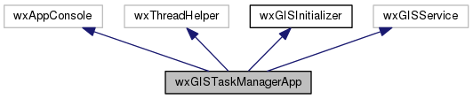
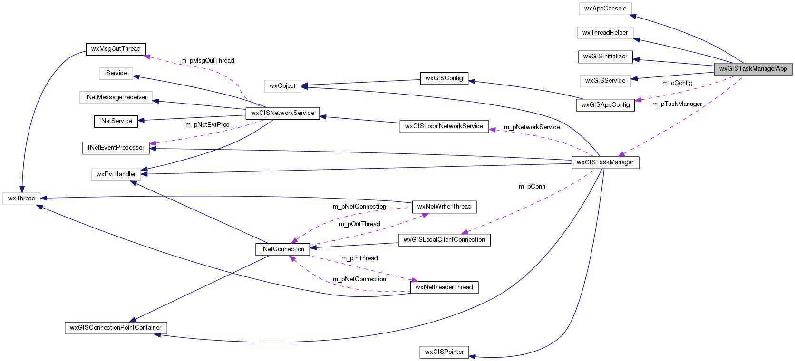

|
|
Version: 0.6.0 |


wxGISTaskManagerApp Class Reference
#include <tskmngrapp.h>
Inheritance diagram for wxGISTaskManagerApp:

Collaboration diagram for wxGISTaskManagerApp:

Protected Member Functions | |
| virtual wxThread::ExitCode | Entry () |
| bool | CreateAndRunExitThread (void) |
| void | DestroyExitThread (void) |
Protected Attributes | |
| wxGISAppConfig | m_oConfig |
| wxCriticalSection | m_ExitLock |
| wxGISTaskManager * | m_pTaskManager |
| bool | m_bService |
Detailed Description
Main task manager application. This is an singleton application which manage tasks (geoprocessing or something else). Each application or different instances of the same application create, change, delete, start, stop, pause their tasks via this application. The application instance should try to start task manager application and connect to it via tcp ethernet protocol. While exiting - send exit command to task manager. If there are no any other connections, task manager should exit. In standalone mode task manager can be run as a service to execute by timer.
The documentation for this class was generated from the following files:
- /home/bishop/work/projects/nextgismanager/include/wxgis/tskmngr_app/tskmngrapp.h
- /home/bishop/work/projects/nextgismanager/src/tskmngr_app/tskmngrapp.cpp
- Generated on Fri Sep 26 2014 01:11:03 for ngm by
 1.8.6
1.8.6